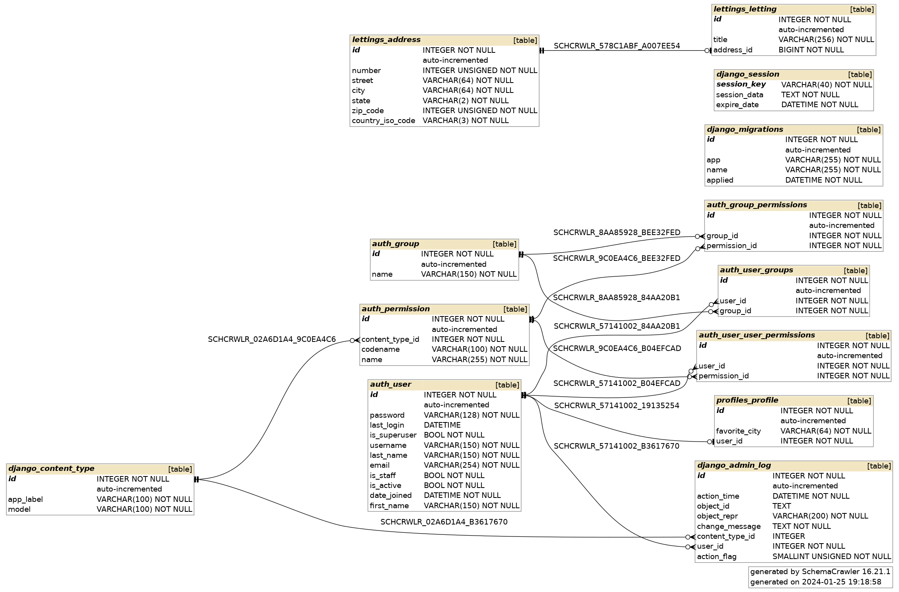

Orange County Lettings’s documentation!
Sommaire :
- À propos
- Technologies et Langages utilisés
- Structure de ce projet
- Installation du projet sur votre machine
- Demarrage rapide
- Demarrage avec Docker
- Administration pour notre projet Orange County Lettings
- Structure de la base de données
- Les Interfaces de Programmation
- Les Tests Unitaires
- Les Tests de coverage
- Le Linting
- Surveillance de l’application avec Sentry
- Déploiement avec Docker et Render
À propos
Ceci est une application Web appelée Orange County Lettings qui affiche les disponibilités. locations, leurs adresses et profils des personnes utilisant cette plateforme.
En utilisant la page d’administration web, il est possible de gérer toutes les données de l’application de manière sûre, sans compromettre l’intégrité de la base de données. Toutes ces données sont enregistré dans un fichier de base de données.
En accédant à l’application via un navigateur web, il est possible de visualiser:
une liste de profils
un seul profil détaillé
une liste des locations disponibles
une location en détail
La page d’accueil de cette application contient deux liens: un vers la liste des profils et l’autre vers la liste des locations.
Technologies et Langages utilisés

Python est le langage de programmation de choix pour ce projet. Sa version utilisée dans ce projet est Python 3.11.7
Ceci est une application web Django. Django est un framework Web écrit en Python qui vous permet de créer des applications sous le paradigme MVC (Model View Controller). Django propose une interface d’administration accessible via un navigateur web.
Docker et Docker Compose sont utilisés pour rendre cette application portable. Avec Docker, vous pouvez créer des conteneurs pour isoler vos applications et disposer d’environnements reproductibles sur différentes plateformes. Docker Compose vous permet de créer des définitions d’environnement pour votre application : au lieu d’écrire manuellement des commandes Docker complètes ou de créer des scripts shell, avec Docker Compose, vous pouvez définir tous les détails dans un fichier YAML et lancer les applications avec une seule commande. Vous pouvez également combiner plusieurs applications dans un seul fichier et les gérer en tant que dépendances d’une application principale.
Cette documentation a été rédigée via Sphinx. Sphinx vous permet de créer de belles pages de documentation et possède plusieurs fonctionnalités. L’une d’elles est la possibilité de lire des docstrings directement à partir du code Python, afin que vous puissiez documenter les API, les fonctions, les classes, etc…
Cadre du Projet
Le projet Orange County Lettings est un exemple de site web développé dans le cadre de la formation Développeur d’application Python chez OpenClassrooms. Cette application web, en phase d’expansion, utilise des technologies modernes et des pratiques de développement avancées.
Architecture et Conception
Le projet est structuré en plusieurs applications Django (lettings, profiles, oc_lettings_site), illustrant une architecture modulaire. Chaque application est conçue pour gérer des aspects spécifiques de la plateforme, comme la gestion des locations (lettings) et des profils utilisateurs (profiles), tout en partageant une base commune (oc_lettings_site).
Technologies Principales
Python 3.11.7 : Langage de programmation principal, réputé pour sa lisibilité et sa simplicité.
Django 5.0.1 : Framework web Python, choisi pour sa robustesse et sa capacité à accélérer le développement grâce à ses nombreuses fonctionnalités intégrées.
Docker : Utilisé pour la conteneurisation de l’application, garantissant la portabilité et la cohérence des environnements de développement, de test et de production.
Dépendances Clés
Django : Comme mentionné, le cœur du projet.
Sentry SDK : Intégré pour la surveillance et le suivi des erreurs, contribuant à la robustesse de l’application.
Pytest, Coverage : Utilisés pour les tests unitaires et la mesure de la couverture des tests, assurant la qualité et la fiabilité du code.
flake8, pylint : Outils de linting pour maintenir le code propre et conforme aux bonnes pratiques.
Sphinx : Pour la génération de cette documentation, permettant d’extraire et de compiler les docstrings du code.
Optimisation et Maintenance
La réorganisation du code en applications distinctes et la mise en œuvre d’une architecture modulaire améliorent non seulement la maintenabilité mais aussi la flexibilité du projet. Les migrations Django sont utilisées pour gérer les modèles de données, tandis que les tests unitaires et d’intégration assurent une qualité constante.
Surveillance et Gestion des Erreurs
L’intégration de Sentry pour le suivi des erreurs et l’utilisation de logs stratégiques renforcent la surveillance et la fiabilité de l’application.
CI/CD et Déploiement
Un pipeline CI/CD complet est mis en place, incluant la compilation, les tests, la conteneurisation avec Docker, et le déploiement sur une plateforme choisie (comme Render). Cette approche garantit un processus de déploiement fluide et fiable.
Conclusion et Prérequis
Compte GitHub avec accès en lecture à ce repository
Git CLI
SQLite3 CLI
Interpréteur Python, version 3.6 ou supérieure
Dans le reste de la documentation sur le développement local, il est supposé que la commande python de votre OS shell exécute l’interpréteur Python ci-dessus (à moins qu’un environnement virtuel ne soit activé). Cet ensemble de technologies et de pratiques illustre un engagement envers la qualité, l’efficacité et la scalabilité dans le développement de logiciels modernes. La documentation technique, créée avec Sphinx et hébergée sur Read The Docs, en est un témoignage supplémentaire, facilitant la compréhension et la collaboration future sur le projet.
Structure de ce projet
Voici la structure de répertoire du projet :
.
├── Dockerfile
├── lettings
│ ├── admin.py
│ ├── apps.py
│ ├── models.py
│ ├── templates
│ │ └── lettings
│ │ ├── index.html
│ │ └── letting.html
│ ├── tests.py
│ ├── urls.py
│ └── views.py
├── manage.py
├── oc_lettings_site
│ ├── admin.py
│ ├── apps.py
│ ├── asgi.py
│ ├── models.py
│ ├── settings.py
│ ├── settings_test.py
│ ├── tests.py
│ ├── urls.py
│ ├── views.py
│ └── wsgi.py
├── oc-lettings-site_backup.sqlite3
├── oc-lettings-site.sqlite3
├── Procfile
├── profiles
│ ├── admin.py
│ ├── apps.py
│ ├── models.py
│ ├── templates
│ │ └── profiles
│ │ ├── index.html
│ │ └── profile.html
│ ├── tests.py
│ ├── urls.py
│ └── views.py
├── pylint_django_setup.py
├── README.md
├── requirements.txt
├── setup.cfg
├── start.sh
├── static
│ ├── assets
│ │ ├── fonts
│ │ └── img
│ │ └── logo.png
│ ├── css
│ │ └── styles.css
│ └── js
│ └── scripts.js
├── structure_de_ce_projet.txt
└── templates
├── 404.html
├── 500.html
├── base.html
└── index.html
14 directories, 44 files
Installation du projet sur votre machine
Pour créer un environnement virtuel tout en installant la version de Python 3.11.7 sans affecter la version globale de Python sur votre machine Linux, vous pouvez suivre les étapes ci-dessous. Je vais détailler chaque étape pour vous aider à comprendre le processus. Voir la rubrique (Installation de Python 3.11.7 sur votre machine)
Cloner le Référentiel :
cd /path/to/put/project/in
Avec HTTPS
git clone https://github.com/waleedos/2023_P13_mettez_a_l-echelle_une_application_Django_en_utilisant-_une_architecture_modulaire.git
Avec SSH
git clone git@github.com:waleedos/2023_P13_mettez_a_l-echelle_une_application_Django_en_utilisant-_une_architecture_modulaire.git
Dézippé le fichier téléchargé par clone :
unzip nom_du_fichier.zip
Allez dans le dossier dézippé :
cd /path/to/nom_du_dossier_dézippé
Attention
Nous recommandons fortement l’utilisation de Python 3.11.7 pour ce projet. Cette version spécifique de Python offre non seulement les dernières fonctionnalités et optimisations du langage, mais elle est également en adéquation avec les dépendances et les exigences du projet.
En alignant l’environnement de développement sur cette version précise, nous assurons la cohérence, la compatibilité des packages et la prévention des problèmes liés aux différences de version.
En outre, l’utilisation de Python 3.11.7 nous permet de tirer pleinement parti des améliorations en termes de performance et de fonctionnalités syntaxiques, optimisant ainsi le développement et l’exécution de l’application.
Pour créer un environnement virtuel tout en installant la version de Python 3.11.7 sans affecter la version globale de Python sur votre machine Linux, vous pouvez suivre les étapes existantes dans la rubrique suivante dans la documentation : « Installation de Python 3.11.7 ».
Pour plus d’informations, veuillez consulter la section Installation de Python 3.11.7.
Activez votre environnement virtuel (vide jusqu’à maintenant) :
source venv/bin/activate
Installez tous les packets et dépendances de ce projet :
pip install --requirement requirements.txt
Démarrez le serveur Django :
python manage.py runserver
Aller sur la page du projet dans un navigateur :
http://localhost:8000
Installation de Python 3.11.7
Cette documentation détaille le processus d’installation de notre projet sur un système d’exploitation Linux.
Il est essentiel de noter que le choix de Linux comme environnement de développement et de déploiement est motivé par sa stabilité, sa sécurité, et sa flexibilité, des qualités appréciées dans le développement de logiciels modernes.
De plus, nous recommandons fortement l’utilisation de Python 3.11.7 pour ce projet. Cette version spécifique de Python offre non seulement les dernières fonctionnalités et optimisations du langage, mais elle est également en adéquation avec les dépendances et les exigences du projet.
En alignant l’environnement de développement sur cette version précise, nous assurons la cohérence, la compatibilité des packages et la prévention des problèmes liés aux différences de version.
En outre, l’utilisation de Python 3.11.7 nous permet de tirer pleinement parti des améliorations en termes de performance et de fonctionnalités syntaxiques, optimisant ainsi le développement et l’exécution de l’application.
Suivre ces instructions garantit une installation fluide et un environnement de travail idéal pour contribuer efficacement au projet.
Pour créer un environnement virtuel tout en installant la version de Python 3.11.7 sans affecter la version globale de Python sur votre machine Linux, vous pouvez suivre les étapes ci-dessous. Je vais détailler chaque étape pour vous aider à comprendre le processus.
Étape 1: Télécharger la dernière version de Python
sudo apt-get update sudo apt-get install -y build-essential zlib1g-dev libncurses5-dev libgdbm-dev libnss3-dev libssl-dev libreadline-dev libffi-dev wgetAllez sur le site officiel de Python et trouvez l’URL de la dernière version de Python 3 en format .tar.xz.
Utilisez wget pour télécharger le fichier :
wget [URL_du_fichier_python.tar.xz]Dézipper le fichier téléchargé pour accéder à son contenu :
tar -xf [Nom_du_fichier_python.tar.xz]Accédez au répertoire extrait :
cd [Nom_du_répertoire_extrait]
Étape 2: Configurez les options de compilation
./configure --enable-optimizations --prefix=/opt/python3.11Compilez Python :
make -j 4Installez Python dans le répertoire /opt :
sudo make altinstall
Étape 3: Créer un environnement virtuel
Installez le package virtualenv si ce n’est pas déjà fait :
sudo apt-get install python3-virtualenvCréez un répertoire pour votre environnement virtuel :
mkdir venvCréez un environnement virtuel en utilisant la version de Python que vous venez d’installer :
virtualenv --python=/opt/python3.11/bin/python3.11 venv/
Étape 4: Activer l’environnement virtuel
source venv/bin/activate
Vous devriez maintenant avoir un environnement virtuel fonctionnel qui utilise la version 3.11.7 de Python 3 que vous avez installée, sans affecter la version globale de Python sur votre machine Linux.
Demarrage rapide
S’assurer que vous etes dans le repertoire du projet :
cd [Nom_du_répertoire_du projet]
S’assurer que votre environnement virtuel est activé :
source venv/bin/activate
Démarrez le serveur Django :
python manage.py runserver
Aller sur la page du projet dans un navigateur:
http://localhost:8000
Demarrage avec Docker
Vous pouvez démarrer l’application sur votre ordinateur directement et tres facilement avec docker, sans avoir à configurer un environnement virtuel ou quoi que ce soit :
Démarrez Docker (s’il ne fonctionne pas déjà en arrière-plan).
1- Vérifiez le status de docker :
sudo systemctl status docker
2- Si docker ne fonctionne pas déjà en arrière-plan, démarrez le:
sudo systemctl restart docker
3- Télécharger le tout dernier (Tag) avec la commande suivante:
docker pull waleedos/orange_county_lettings:latest
Note
Vous ne verrez PAS de nouveau fichier dans votre dossier, mais l’image est automatiquement téléchargée dans un conteneur correspondant à un Docker et apparaîtra directement dans le logiciel Docker-Desktop (si vous l’avez installer).
4- Démarrer et executer cette dernière image téléchargée:
docker run -p 8000:8000 waleedos/orange_county_lettings:latest
L’image est en cours d’exécution. Vous devriez voir des lignes similaires à celles ci-dessous :
5- Ouvrez votre navigateur et connectez-vous à l’application via:
http://127.0.0.1:8000/
ou
http://localhost:8000/
Une fois que vous avez terminé, et si vous utilisez l’application Docker-desktop, vous pouvez soit appuyer sur le bouton d’arrêt (le carré), soit appuyer directement sur la poubelle, ce qui arrêtera la course et supprimera le conteneur actuel.
–
Administration pour notre projet Orange County Lettings
Panel d’administration
Aller sur l’url suivante (dans le cas d’un test en local):
http://localhost:8000/admin
Connectez-vous en tant qu’administrateur avec les identifiants suivants :
user : admin
password : Abc1234!
L’administration Django est une interface puissante qui permet une gestion aisée des modèles et des données du site.
Accès à l’Administration :
URL : /admin/
Méthode : GET pour l’accès, POST pour les interactions (ajout, modification, suppression des données).
Modèle Letting :
Fichier : lettings/admin.py
Classe : LettingAdmin
Configuration : Les champs address et title du modèle Letting sont affichés dans l’interface d’administration.
Modèle Profile :
Fichier : profiles/admin.py
Classe : ProfileAdmin
Configuration : Les champs user et favorite_city du modèle Profile sont affichés dans l’interface d’administration.
Gestion des Données :
Les administrateurs peuvent effectuer les actions suivantes dans l’interface d’administration :
Ajouter de nouvelles instances pour les modèles Letting et Profile.
Modifier les données existantes des instances de ces modèles.
Supprimer des instances si nécessaire.
Sécurité et Accès :
L’accès à l’interface d’administration est restreint aux utilisateurs ayant des droits d’administrateur. Il est recommandé de gérer attentivement les comptes administrateurs pour maintenir la sécurité du site.
Personnalisation et Extensions : L’interface d’administration Django est hautement personnalisable. Si des fonctionnalités supplémentaires sont nécessaires (par exemple, des filtres avancés, des champs personnalisés, etc.), elles peuvent être ajoutées en étendant les classes ModelAdmin.
Structure de la base de données
Base de données et structure des modèles - Base de données SQLite3
SQLite est une bibliothèque C qui fournit une base de données légère basée sur le disque qui ne nécessite pas un processus de serveur séparé.
Nous pouvons accéder à la base de données en utilisant une variante non standard du langage de requête SQL. Il s’agit d’une base de données SQL autonome, basée sur des fichiers.
En tant que tel, nous n’avons pas besoin d’installer de modules ou de logiciels supplémentaires au fur et à mesure qu’il est fourni avec Python, et en plus, Django l’utilise nativement lors de la création d’un nouveau projet.
Contenu de la base de données
Il y a 3 objets principaux dans la base de données:
1- Les Profils des utilisateurs/clients : Chaque profil a un id (non affiché), un favori-city et un id-utilisateur (non affiché). Un profil affiche certaines des informations de l’utilisateur stockées dans la table « utilisateur d’auth-utilisateur » : prénom, nom, adresse électronique et ville préférée.
2- Letting : Propriétés Listed où leur titre correspondant est affiché, Chaque letting a un id (non affiché), un titre, et est lié à une adresse-id (non affichée, voir ci-dessous).
3- Adresse : Adresses de chaque bien. Une adresse a un id (non affiché), un numéro, une rue, une ville, un état, un code postal et un code ISO de pays.
S’assurer que vous êtes dans le répertoire du projet :
cd [Nom_du_répertoire_du_projet]
Ouvrez une session Shell pour sqlite :
sqlite3
Connectez-vous à la base de données :
.open oc-lettings-site.sqlite3
Afficher les tables dans la base de données :
.tables
Afficher par exemple les colonnes dans le tableau des profils :
PRAGMA table_info("profiles_profile");
Lancer une requête sur la table des profils pour filtrer uniquement les enregistrements où la valeur de la colonne favorite_city commence par la lettre “B” :
select user_id, favorite_city from profiles_profile where favorite_city like 'B%';
Voici le diagramme de notre base de données
–
Agrandir et voir cette Image sur une autre plateforme–
Les Interfaces de Programmation
Interfaces de Programmation pour l’application (oc_lettings_site)
1- Page d’Accueil :
Description
Affiche la page d’accueil du site.
URL et Params
/
Méthode HTTP
GET
Données Req.
Aucune
Réponse Att.
Page HTML de l’accueil
Exemple de Réponse:
<html>
<head>
<title>Page d'Accueil</title>
</head>
<body>
<h1>Bienvenue sur le site OC Lettings</h1>
</body>
</html>
2- Test d’Erreur 404 :
Description
Provoque intentionnellement une erreur 404 pour tester la gestion des erreurs.
URL et Params
/test-404/
Méthode HTTP
GET
Données Req.
Aucune
Réponse Att.
Statut: 404 Non Trouvé Contenu: Page d’erreur personnalisée.
Exemple de Réponse:
<html>
<head>
<title>Erreur 404</title>
</head>
<body>
<h1>Page non trouvée</h1>
</body>
</html>
3- Test d’Erreur 500 :
Description
Provoque intentionnellement une erreur 500 pour tester la gestion des erreurs.
URL et Params
/test-500/
Méthode HTTP
GET
Données Req.
Aucune
Réponse Att.
Statut: 500 Erreur Interne du Serveur Contenu: Page d’erreur personnalisée.
Exemple de Réponse:
<html>
<head>
<title>Erreur 500</title>
</head>
<body>
<h1>Erreur interne du serveur</h1>
</body>
</html>
Interfaces de Programmation pour l’application (lettings)
1- Endpoint /lettings/ (URL lettings_index):
Description
Cette vue affiche une liste de toutes les locations disponibles. Elle récupère toutes les instances de Letting et les transmet au template pour affichage.
URL et Params
/lettings/
Méthode HTTP
GET
Données Req.
Aucune donnée de requête nécessaire.
Réponse Att.
Structure: Une page HTML rendue affichant une liste des locations (lettings).
Exemple de Réponse:
lettings_list = Letting.objects.all()
context = {"lettings_list": lettings_list}
return render(request, "lettings/index.html", context)
2- Endpoint /lettings/<letting_id>/ (URL letting):
Description
Cette vue affiche les détails d’une location spécifique. Elle récupère une instance de Letting basée sur l’id fourni et transmet les détails au template.
URL et Params
/lettings/<letting_id>/ (où letting_id est un entier représentant l’ID du letting).
Méthode HTTP
GET
Données Req.
letting_id (ID de la location à afficher).
Réponse Att.
Structure: Une page HTML rendue affichant les détails de la location spécifiée.
Exemple de Réponse:
specific_letting = get_object_or_404(Letting, id=letting_id)
context = {"title": specific_letting.title, "address": specific_letting.address}
return render(request, "lettings/letting.html", context)
Ces informations détaillées permettront une meilleure compréhension de l’interaction avec l’application lettings via ses interfaces. La gestion des erreurs, comme la gestion des cas où un letting spécifique n’est pas trouvé (get_object_or_404), est également intégrée dans les vues.
Interfaces de Programmation pour l’application (profiles)
1- Liste des Profils
URL et Méth. HTTP
URL : /profiles/ Méthode : GET
Description
Cette interface affiche une liste de tous les profils d’utilisateurs.
Rép. Att.
La réponse est une page HTML (profiles/index.html) affichant la liste des profils. Chaque profil est obtenu à partir du modèle Profile qui est lié au modèle utilisateur standard de Django.
Exemple de Code pour la Vue index dans views.py :
def index(request):
logger.info("Affichage de la liste des profils.")
profiles_list = Profile.objects.all()
context = {"profiles_list": profiles_list}
return render(request, "profiles/index.html", context)
2- Détails d’un Profil Spécifique
URL et Méth. HTTP
URL : /profiles/<username>/ Méthode : GET
Description
Cette interface affiche les détails d’un profil utilisateur spécifique. Le username est passé en tant que paramètre dans l’URL.
Rép. Att.
La réponse est une page HTML (profiles/profile.html) affichant les détails du profil spécifié. Les détails incluent le nom d’utilisateur et la ville favorite.
Exemple de Code pour la Vue profile dans views.py :
def profile(request, username):
logger.info(f"Affichage du profil pour l'utilisateur : {username}")
profile_instance = get_object_or_404(Profile, user__username=username)
context = {"profile": profile_instance}
return render(request, "profiles/profile.html", context)
Conclusion sur les Interfaces de Programmation du Projet OC Lettings
Le projet OC Lettings, structuré autour des applications Django oc_lettings_site, lettings, et profiles, présente une architecture claire et modulaire, facilitant la compréhension et l’interaction avec ses différentes composantes. Chaque application encapsule des fonctionnalités spécifiques, exposées via des interfaces de programmation bien définies.
L’application oc_lettings_site sert de point d’entrée principal, orchestrant les interactions globales et dirigeant les utilisateurs vers les fonctionnalités pertinentes des applications lettings et profiles. L’application lettings gère efficacement les données relatives aux locations, offrant des interfaces pour afficher la liste des locations disponibles et les détails de chaque location. En parallèle, l’application profiles se concentre sur la gestion des profils utilisateurs, avec des interfaces pour visualiser la liste des profils et les détails spécifiques à chaque utilisateur.
La documentation des interfaces de ces applications met en lumière la manière dont elles interagissent avec les utilisateurs et les données. Les exemples de code fournis pour chaque endpoint illustrent concrètement comment les requêtes sont traitées et comment les réponses sont structurées, offrant ainsi une compréhension approfondie du fonctionnement interne de l’application.
En somme, ce projet démontre une application robuste et bien structurée de Django, où chaque composant joue un rôle clé dans la fourniture d’une expérience utilisateur fluide et cohérente. La clarté des interfaces de programmation et la modularité du code favorisent une maintenance aisée et une évolutivité efficace, éléments cruciaux pour le succès continu du projet OC Lettings.
Les Tests Unitaires
cd /path/to/Python-OC-Lettings-FR
source venv/bin/activate
pytest
Dans ce projet, nous comptons 3 applications Django :
L’application lettings
L’application oc_lettings_site
L’application profiles
Dans chaque dossier de ces 3 applications, existe un fichier nommé (test.py) dans lequel nous avons élaborer les tests necessaires pour cette application :
Pour l’application lettings : Nous avons 9 tests.
Pour l’application oc_lettings_site : Nous avons 7 tests.
Pour l’application profiles : Nous avons 13 tests.
Execution des tests séparement:
Pour executer les tests d’une application précise, nous pouvons utiliser trois méthodes :
1- Lancer la commande “pytest” dans le repertoire de l’application en question :
cd profiles
Puis
pytest
Cela execute tous les tests existants dans le fichier « tests.py » de l’application « profiles »
2- Lancer la commande pytest depuis le dossier racine du projet :
pytest profiles/tests
Cela execute aussi tous les tests existants dans le fichier « tests.py » de l’application « profiles »
3- Execution d’un seul test existant dans le fichier « test.py »
pytest profiles/tests.py::NomDeLaClasseDeTest::NomDuTestEnQuestion
Par exemple dans notre cas, nous voudrions executer le test test_profile_access_redirection
pytest profiles/tests.py::ProfileAccessTestCase::test_profile_access_redirection
Execution de tous les tests globalement depuis la racine du projet:
pytest

–
Agrandir et voir cette Image sur une autre plateforme–
Les Tests de coverage
Les tests de coverage dans ce projet servent à évaluer la proportion du code source qui est testée par les tests unitaires et d’intégration.
Ils permettent d’identifier les parties du code qui ne sont pas couvertes par les tests, aidant ainsi à améliorer la qualité et la fiabilité du logiciel.
Les rapports de coverage offrent une vue d’ensemble de la couverture de tests, indiquant où des efforts supplémentaires sont nécessaires pour garantir une couverture de test complète et efficace de votre application.
Il est impératif de vérifier que la couverture de test est supérieure à 80 %.
Nous pouvons executer ces tests de coverage via 3 commandes differentes
Nous devrions en premier lieux s’assurer du Path de notre projet :
export PYTHONPATH=$PYTHONPATH:/xxxx/xxxxx/Bureau/oc_p13
Puis
pylint --load-plugins pylint_django .
1- 1ere méthode :
coverage report
Cela nous donne sur la console, un pourcentage globale de la couverture de nos tests pour le projet.
2- 2eme Méthode
coverage run manage.py test
Cette commande nous donne aussi sur la console, un pourcentage globale de la couverture de nos tests pour le projet, mais avec beaucoup plus de details.
3- 3eme Méthode
coverage html
Cette commande va créer un dossier à la racine nommé htmlcov, et dans lequel, nous trouverons un fichier index.html, consultable par vos navigateurs, pour afficher le résultat final de ce test de coverage.

–
Agrandir et voir cette Image sur une autre plateforme–
Le Linting
Vérification du code avec le Linting
Le linting est une étape essentielle dans le maintien et le développement moderne de la qualité du code dans tout projet de développement logiciel garantissant la cohérence du code et le respect des bonnes pratiques.
Dans le cadre du projet Orange County Lettings, nous utilisons pylint avec des plugins spécifiques à Django et flake8, un outil de linting pour Python qui combine les fonctionnalités de pyflakes, mccabe, et pep8 pour assurer la conformité de notre code aux standards de codage.
Configuration de l’Environnement Python :
La commande
export PYTHONPATH=$PYTHONPATH:[chemin_exact_du_projet_/oc_p13
est utilisée pour ajouter le répertoire de notre projet au PYTHONPATH. Cela permet aux outils comme pylint de reconnaître correctement les modules de notre projet lors de l’exécution de l’analyse.
Exécution de Pylint avec des Plugins Django :
La commande
pylint --load-plugins pylint_django .
est la commande pour exécuter pylint tout en chargeant les plugins spécifiques à Django. Cela permet à pylint d’analyser plus efficacement le code Django en tenant compte de ses particularités.
L’option –load-plugins pylint_django active des fonctionnalités spécifiques à Django, comme la reconnaissance des modèles Django et des configurations spéciales.
Le (.) à la fin de la commande indique à pylint de vérifier tous les fichiers Python dans le répertoire actuel (et ses sous-répertoires).
Cela nous permet une meilleure reconnaissance des modèles Django, des champs de base de données, et des spécificités de Django qui ne sont pas présents dans les projets Python standards.
L’exécution de cette commande dans le répertoire racine du projet (indiqué par .) permet à pylint de parcourir l’ensemble du projet, y compris les applications Django, et d’identifier les problèmes potentiels tels que les erreurs de syntaxe, les problèmes de style, les erreurs de codage, et autres non-conformités aux bonnes pratiques.
En intégrant ces étapes de linting dans notre flux de travail, nous nous assurons que le code de notre projet est non seulement fonctionnel mais aussi propre, bien organisé et conforme aux standards de codage Python et Django. Cela facilite la maintenance du code, améliore sa lisibilité et contribue à une base de code de haute qualité.
Voici l’assurance que nous donne l’éxecution de cette commande :
–
–
Flake8 & la qualité du code
Flake8, en 2024, demeure un outil essentiel pour la programmation Python, combinant les fonctionnalités de pyflakes, mccabe, et pep8.
Il est utilisé pour vérifier le style de codage et la qualité logique du code Python.
Flake8 aide les développeurs à identifier les erreurs potentielles, les styles de codage non conformes aux normes PEP 8, et les problèmes de complexité.
Il facilite la maintenance du code en assurant une cohérence stylistique et en améliorant sa lisibilité.
Il est largement intégré dans les environnements de développement intégrés (IDE) et les pipelines CI/CD, renforçant les pratiques de codage propre et efficace.
Configuration de flake8
Avant de penser à la configuration de flake8, il faut d’abord l’installer dans l’environnement virtuel du projet ainsi que ses composantes. Pour cela utilisez les commandes suivantes :
pip install flake8
et
pip install flake8-html
Afin d’élaborer un rapport de toutes les erreurs exisatntes et pouvoir les corriger, il faut d’abord configurer flake8.
Pour cela, il faut créer un fichier nommé « .flake8 » à la racine du projet, et dans l’exemple de ce projet, voici le contenu de ce fichier :
[flake8]
max-line-length = 99
exclude = venv, .git, .gitignore, __pycache__, env, vmigrations, migrations
Maintenant que tout les reglages sont faits, nous pouvons utiliser la commande suivante, qui garce à la quelle, un dossier nommé flake-report va etre créé à la racine du projet, et nous trouverons dedans un fichier index.html consultable dans un navigateur, pour voir toutes les erreurs détéctées en détails :
flake8 --format=html --htmldir=flake-report
–
–
Agrandir et voir cette Image sur une autre plateforme–